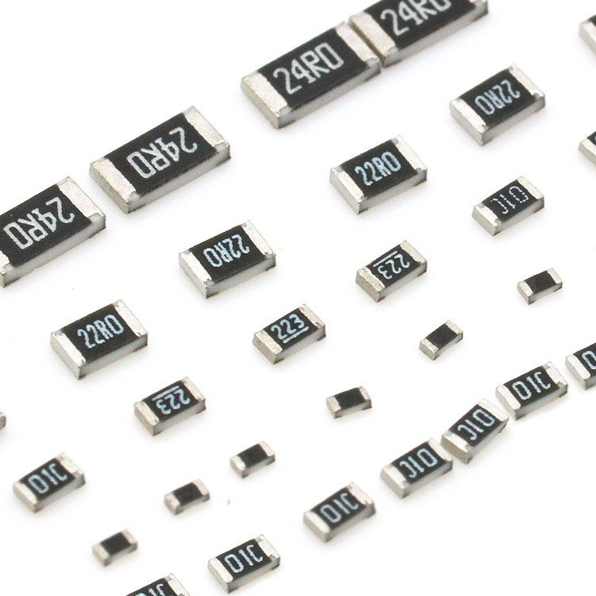

电阻：丝印怎么读、功率怎么降额、精度怎么算
电阻是最便宜、也最容易被当成「随便贴一个」的器件。但一颗 0402 的 100Ω 接 5V 会烧出焦痕；一颗 1% 100ppm 的 10k 在 85°C 已经不是 1%；一颗 4.7k 上拉会让 I2C 跑不上 400kHz。电阻的四个数——阻值、功率、精度/温漂、封装——每一个都对应一类真实的失效。这一章用本板真实位号逐个算。

读完这一章，你应该能
- 看着丝印（三位制/四位制/EIA-96）直接读出阻值与精度
- 按降额曲线算出某封装在某温度下的可用功率，并判断一颗电阻会不会烧
- 把「初始精度 + 温漂 + 焊接偏移」叠加，判断分压/采样电路是否达标
- 解释热噪声为什么让高阻值不适合做精密采样
- 用万用表在板上判断一颗电阻是上拉、串阻还是终端（不拆件）
2.1.1先把丝印读对：三种编码规则
贴片电阻本体空间小，阻值用编码印。三种规则并存，混起来就会读错一个数量级：
| 规则 | 形式 | 解读 | 例 |
|---|---|---|---|
| 三位制（5%） | ABC | AB×10C | 103 = 10kΩ 472 = 4.7kΩ 010 = 1Ω |
| 四位制（1%） | ABCD | ABC×10D | 1002 = 10.0kΩ 4992 = 49.9kΩ 1501 = 1.50kΩ |
| R 记法 | 含字母 R | R = 小数点 | 22R0 = 22Ω 4R7 = 4.7Ω 0R22 = 0.22Ω R010 = 0.01Ω |
还有第三种：EIA-96 编码（两位数字 + 一位字母，如「01C」「68X」）。前两位是 1–96 的序号，查表得三位有效数字，字母给倍率（C=×100、D=×1000、E=×10⁴…）。这种编码在 0603 以上、1% 精度的小阻值上很常见，只靠肉眼是读不出来的，必须查表。
板上的真实例子：电源反馈 R55 49.9k / R68 15k、R54 84.5k / R69 15k。49.9k 与 84.5k 都不是 E24 值（E24 里只有 47k、82k），它们是 E96 标准点——这正是「1% 电阻按 E96 供货」的直接证据。看到 49.9、84.5、124、15.0 这类值，就说明设计者在意分压精度。
为什么 1% 电阻偏爱 E96，而 5% 用 E24
E24 每十倍 24 个值（相邻比值约 1.10），E96 每十倍 96 个（约 1.025）。精度 5% 时只需 10% 步进；精度 1% 时必须用 2.5% 步进，否则「标称 4.7k 实际 4.7k±1%」之间会留下无法覆盖的空档。精度决定了系列的密度，不是厂家随便定的。
2.1.2功率：额定的数字不可直接用
规格书上的「1/16W」是在标准焊盘、25°C（或 70°C）、无遮挡条件下测的。实际使用要过两道关：
- 降额曲线：厚膜贴片常见「70°C 以下满额，70→155°C 线性降到 0」。也就是 100°C 时只允许 (155−100)/85≈65% 的额定。
- 工程余量：连续工作取额定的 50%，高温/密闭环境取 30%。
算例（本板真实）：R40/R42 4.7k I2C 上拉，跨压 3.3V。P=3.3²/4700=2.3mW。0402 额定 62.5mW，即使 85°C 降额到 51mW，占用也只有 4.5%——安全。
反例：把 100Ω 接在 5V 上做「假负载」，P=250mW。0402 的 4 倍额定，几分钟就变色，长期开路。需要 1/4W 的 1206 或四颗 0402 并联（等效 100Ω/4=25Ω? 不，四颗 390Ω 并联才约 97.5Ω，每颗只摊 62mW）。
脉冲功率是另一回事：短脉冲（µs 级）下热容允许的瞬时功率远高于额定，规格书会单独给「脉冲功率曲线」。所以 TVS 的 400W 峰值和电阻的 62.5mW 额定不能直接比较——一个是 µs 级、一个是连续。
2.1.3精度：三个误差源必须叠加
「1%」只描述常温初始偏差。完整的最坏偏差是三项相加：
| 误差源 | 典型量 | 怎么来的 |
|---|---|---|
| 初始精度 | ±1%（厚膜）/±0.1%（薄膜） | 出厂分选 |
| 温漂 | ±100~200ppm/°C（厚膜）；±25ppm/°C（薄膜） | 材料 TCR |
| 焊接/长期漂移 | ±0.1~0.3%，1000h 后再 ±0.5% | 应力、潮气、老化 |
算例：10k、1%、100ppm，工作在 85°C（相对 25°C 温升 60°C）：
1% + 100ppm×60 = 1% + 0.6% = 1.6%；再叠加焊接 0.2% → 最坏 ±1.8%（±180Ω）
所以「用 1% 电阻做 1% 精度的分压」在工程上是不成立的。要么选 0.1%/25ppm，要么软件标定，要么用比值匹配的排阻（同一基板上两颗电阻温漂一致，比值误差可到 0.05%）。
本板 R55 49.9k / R68 15k 标注 1%（图上写了 F），对应的输出是 3.32V。若两者各偏 ±1% 且方向相反，输出会偏 ±1%×2≈±2%（这是分压比对单颗精度的放大，第 1.2 章推导过）。这就是为什么精密电源会用 0.1% 或排阻。
2.1.4热噪声：高阻值的隐性代价
电阻本身产生噪声，均方根电压：
Vn = √(4kTRB)，k=1.38×10−23，T 用开尔文，B 是带宽
室温、1kHz 带宽下：1kΩ → 4µV；100kΩ → 40µV；1MΩ → 127µV。12 位 ADC 在 3.3V 参考下 1LSB≈0.8mV，看起来 40µV 微不足道；但若信号本身只有几十 mV（比如热电偶、电桥），噪声就吃掉有效位。
结论：高阻分压不是「省电的好主意」。它省了电流，却把噪声和输入偏置电流误差一起放大。本板 ADC 采样的分压如果做到 100k 以上，就要配运放跟随器（第 1.8 章）。
2.1.5排阻与阵列：不是「省事」，是「一致」
本板 BOOT_CFG 的 R45–R50、JTAG 的 R59–R62 都是「同值成排」。用排阻（4 个或 8 个电阻封在一个壳内）有两个真实收益：
- 一致性好：同一基板、同一工艺，温漂几乎相同。做分压或差分匹配时，比值误差可到 0.05%，远好于两颗 1% 独立电阻。
- 贴装成本低：一次贴 4 颗，BOM 行数也少。
代价：不能单独改值，一个坏可能整排失效；布局上必须整排靠近引脚，走线不如独立电阻自由。
常见封装代号：4D02（4 颗、0603 尺寸）、8P4R（8 脚 4 电阻）、16P8R。「独立」与「公共端」要分清：公共端排阻的所有电阻共享一个引脚，只能做「多路上拉到同一电源」，不能做独立网络。
2.1.60Ω 与 DNP：设计者的决策记录
0Ω 实际是 10–50mΩ 的导体，额定电流看封装：0402 约 1A、0603 约 1A、0805 约 2A、1206 约 3A。设计时若拿它当「电源跳线」过大电流，必须查额定电流而不是「0Ω 就是短路」。
本板 R77/R82 0Ω（电源域跳线）、R31/R33 0Ω（复位链路）、R56 0Ω（版本选项）都属于「可拆的短接线」：调试时拆掉即可切断某个网络，比割铜皮可逆。R85/R76 标 DNP（不贴）同理——位号与焊盘在，默认不装，需要时才补。
2.1.7板上怎么验：三个动作
- 断电测阻值：跨接「信号—电源」读到 4.7k 附近 → 上拉存在；跨接「信号—地」读到 0Ω → 可能被拨码短接或直接接地。
- 上电测电压：外设断开时信号脚接近 3.3V=有上拉；接近 0=有下拉；约 1.65V=上下拉分压中点。
- 算一遍功耗：3.3V 跨在 4.7k 上是 0.7mA；若你测到 7mA，说明阻值实际是 470Ω（丝印看错一位）。
一个真实误判：把「472」看成「47Ω」（472=47×10²=4.7kΩ）。这类错误在排查 I2C 时特别常见——上拉太小会让总线拉不低，现象与「器件坏」一模一样。
五个常见坑
① 0402 上 100Ω 接 5V：250mW，4 倍额定，烧。
② 用 1% 电阻做 1% 分压：全温区最坏 1.8%，超标。
③ 100k 以上分压直接进 ADC：热噪声 + 输入偏置电流，读数跳。
④ 0Ω 当大电流跳线：0805 只有 2A 额定。
⑤ 把 DNP 当漏贴自己补上：并联后改变原阻值，复位阈值漂移。